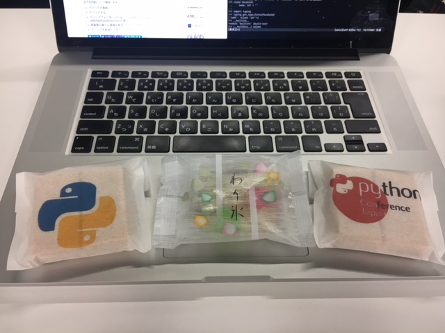
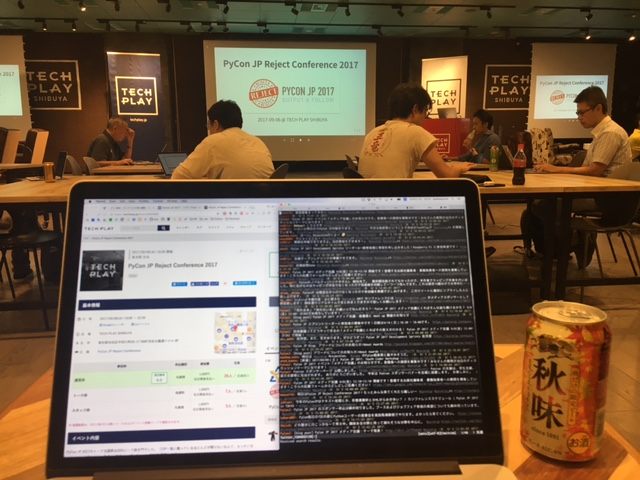
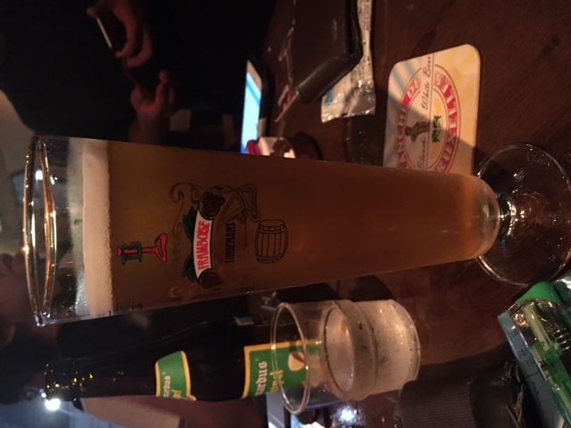
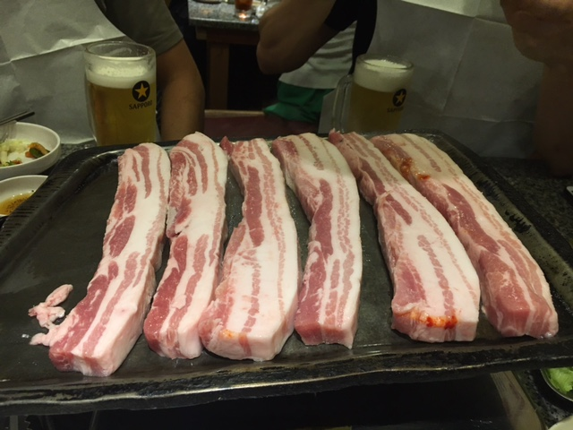

PyConJP2017に参加しました #pyconjp¶
4回目のPyCon参加になりました。今回はいくつか目標を立ててました。
Keynoteを2つとも聞く
Keynote以外の英語のセッションも聞く
はじめましての人もお久しぶりの人も話す
2次会に行く
セッションに参加するだけでなく、メディア企画やポスターセッションのようなコンテンツも楽しむ
結論としては全部達成できましたかね(o・ω・o)
contents
RejectConについて¶
PyConの前夜祭ということで「非公式」で行われました。
話し終わったたびに「何故Rejectされたのか？」と発表者に分析してもらっていたのですが、全体的に「Python成分が薄い」というのが多かったのが印象的でした。 人数が少なめなのが残念でしたが、他にも強力な裏番組が2つあったりしたのとちょっと直前だったせいなのかな…と。
発表内容的にはためになる話も多かったです。年々PyConに応募する内容のレベルも上がってるんだなーと思いました。
After Partry¶
Day1: Party以降¶
お酒の充実度合いがすごかった。ビールサーバー、クラフトビール、日本酒と充実しまくりで堪能してた。
@y__mattuさん にあった。 @soogieさん に紹介してもらったけど、R界隈のホープらしい。曰く「Rでできないことはパンダスにはないとのこと。」でもPythonはPythonでRとかサスにはできないところがあったり、コミュニティがとても楽しいとのこと。これは良かった。
@chezouさん さんの御尊顔を拝見した。すごい謙遜されていたけど、普段からやってるからあえて言わないんだろうな感あった。
@yaegassyさん とか、 @lambdalisueさん とか、 @rokujyouhitomaさん とか人をつないだり、つなげてもらったり、久しぶりの人に挨拶したりしてた。参加するたびにこうゆう機会増えていくの楽しいしおもしろい。
キャリアの話とか、あのときは実はねみたいな話を聞けたりとかセッションを聞く以外の話をできるのは楽しい。
某氏にPEP8 3回読んで自分のコード見てまたPEP8読んでと伝えた
裏PyCon楽しかった
Day2: 有志の二次会¶
肉のボリュームがすごかった。翌日のスプリントにいくための活力は得られたかな。
感想¶
今回はいろいろと「実は…」みたいな会話をすることが多かったPyConだった。
それを聞けるようになったり、言えるようになったのは変化だったり成長だったりするんだろうなと思う。
「聞いて」「見た」なら「自分で確かめる・行動する」フェースが必要だと感じた。
自分の知識不足や発表者の意図を意図通りに受け取れずに誤解・誤読することはあると思う。
先人の知恵は活用しつつも、自分で確かめたり行動する必要が「ある」。
発表は基準にはなる。一歩先に行ったり、正しく理解するには自分で動くことが必要。
セッション30分は聞きやすいけど、せっかくのPyConなんだからもっと時間をかけて深いところも聞きたかった。
ひとつのテーマについて少し深く話そうとしたら軽く10分20分は使うので、せめて中級者以上のセッションは4〜50分くらいほしい。
発表者も30分では話しきれないとわかっているのか、発表を通して後日自分で勉強したり情報を探したりすることができるようなキッカケになるような話し方をしてくれる人が多かったのがありがたかった。